Measurement & Historical Telemetry Inputs
Tune real-time power metrics or choose a real-world scenario preset
Standard operational state. Optimal window for baseline household consumption and EV standard trickle charging.
Real-Time Feature Impact
Estimated directional contribution to this prediction
Class Partitioning Thresholds
Derived from 730,721 training timestamps using 33.3% and 66.7% empirical quantiles
Test Performance Comparison (Full 156,584 Test Set)
Ranked by Macro F1| Rank | Model Architecture | Accuracy | Balanced Accuracy | Macro Precision | Macro Recall | Macro F1 Score | Training Time | Status |
|---|---|---|---|---|---|---|---|---|
| 1 | Random Forest Classifier | 95.18% | 95.30% | 95.24% | 95.30% | 95.27% | 114.48s | Selected Best |
| 2 | Extra Trees Classifier | 95.14% | 95.23% | 95.22% | 95.23% | 95.23% | 38.68s | Runner Up |
| 3 | HistGradientBoosting | 94.92% | 95.02% | 95.02% | 95.02% | 95.02% | 27.83s | High Speed |
| 4 | Decision Tree (Max Depth 12) | 93.41% | 93.58% | 93.55% | 93.58% | 93.55% | 12.12s | Fastest Tree |
| 5 | Logistic Regression (Balanced) | 89.97% | 90.11% | 90.07% | 90.11% | 89.95% | 45.95s | Linear Baseline |
Detailed Metric Comparison (Zoomed 0.85 - 0.96)
Seaborn / MatplotlibFocuses on subtle performance differentials between tree ensembles and linear models
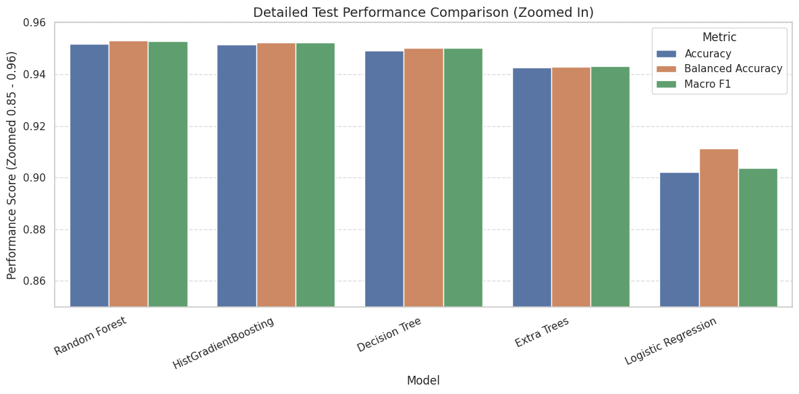
Model Confusion Matrix
Multi-class classification breakdowns across Low, Medium, and High demand states
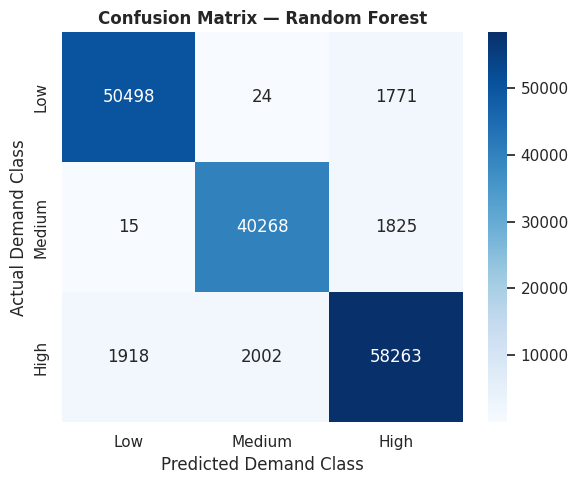
One-vs-Rest ROC Curve & AUC Analysis — Random Forest
Evaluates True Positive Rate vs False Positive Rate for each individual demand level
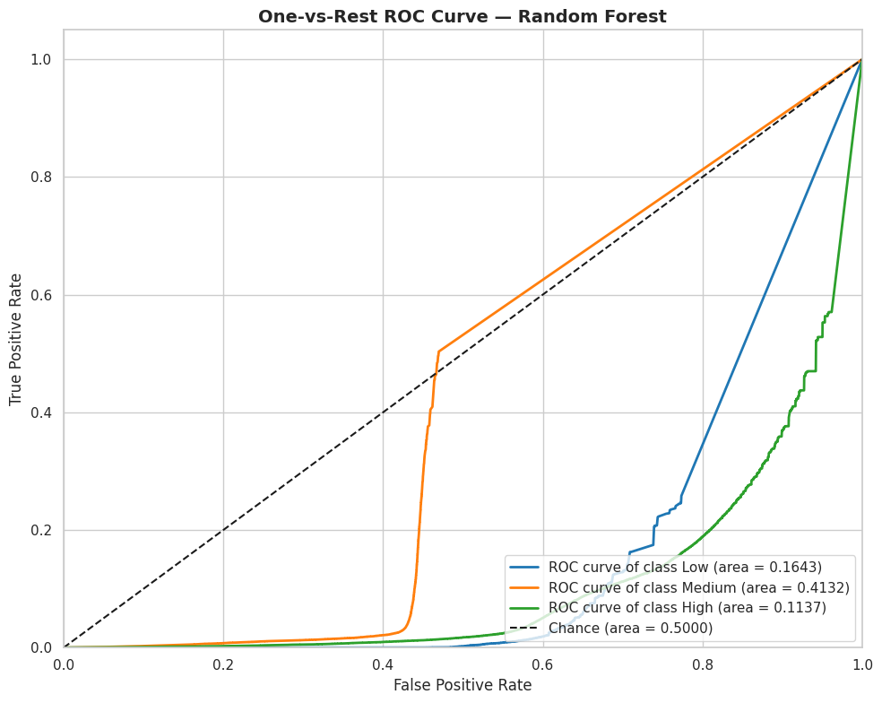
Random Forest Gini Feature Importance
In-tree ImpurityCalculates the mean decrease in node impurity across all 50 bagged decision trees
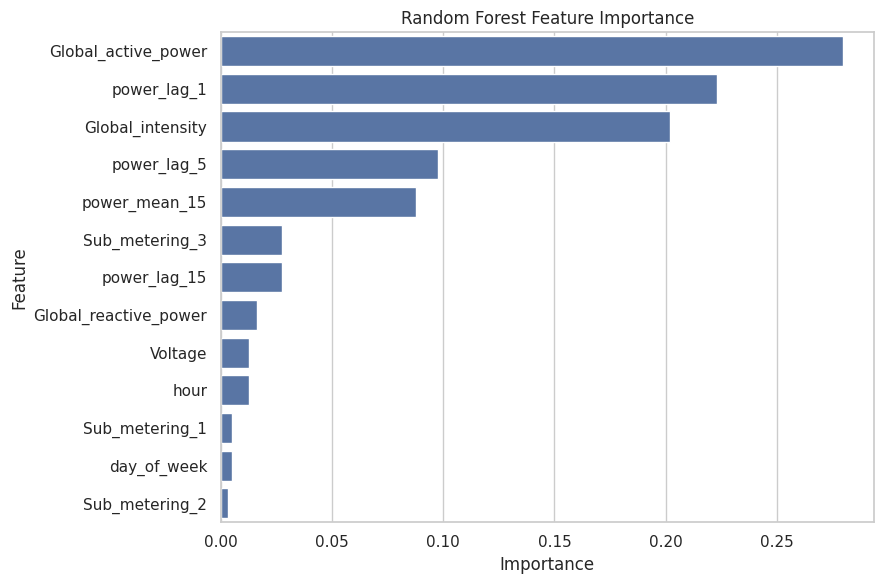
Global_active_power (0.280), power_lag_1 (0.223), and Global_intensity (0.202) comprise over 70% of total decision weight, confirming strong auto-regressive momentum in minute-by-minute energy usage.
Permutation Feature Importance (Validation Set)
Out-of-Bag ShuffleMeasures reduction in Macro F1 score when each feature is randomly shuffled (5 repeats with error bars)
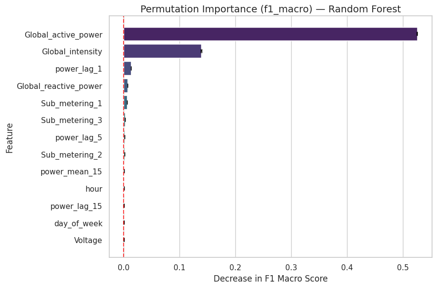
Global_active_power causes a severe 0.525 drop in Macro F1, proving it is irreplaceable for model generalization, while voltage and day-of-week show minimal standalone degradation.
SHAP (SHapley Additive exPlanations) — High Demand Class
Game-theoretic contribution of features driving predictions toward the High Demand regime
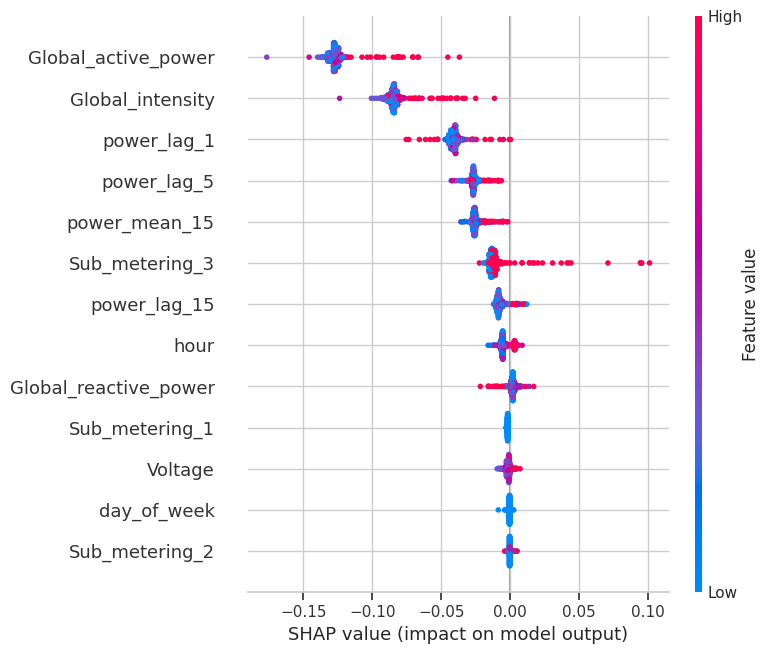
🔴 High Active Power & Intensity
Elevated active power and amperage push the model strongly toward the High Demand class (+SHAP values).
🔵 Temporal Lags & Smoothing
Sustained high values across power_lag_1 and power_mean_15 confirm persistence of peak loads rather than brief measurement spikes.
🟢 Sub-Meter 3 (Water Heater)
Water heating activates in long continuous cycles, serving as a reliable structural indicator of high residential draw.
Execution Time Showdown (Logarithmic Scale)
Aggregations (1.044M Rows)Elapsed seconds for descriptive statistics (count, mean, std, min, max) over numeric streams
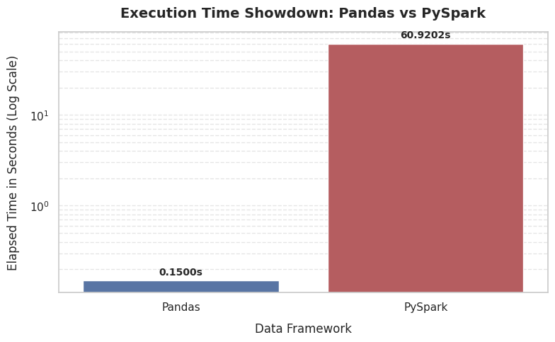
Architectural Performance Breakdown
Why Pandas significantly outperformed local PySpark on this dataset size
Critical Engineering Takeaways (from Project Report Section 7.10):
- JVM & IPC Overhead: PySpark launches a JVM session and coordinates Python workers over Py4J sockets. For single-machine datasets that comfortably fit into RAM (< 2 GB), this coordination overhead dwarfs the actual computation.
- In-Memory Efficiency: Pandas operates directly in contiguous memory using compiled NumPy C/Cython loops, completing the full aggregation in 150 milliseconds.
- When to Scale to Spark: When datasets grow beyond single-node physical RAM (> 100 GB or streaming live telemetry across thousands of homes), PySpark's partitioned RDDs and distributed cluster nodes become essential.
Hourly and Seasonal Power Fluctuations
Microscopic weekly pattern vs macroscopic 2-year monthly averages
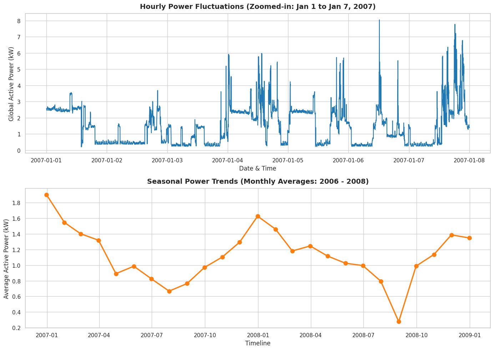
Sub-Metered Consumption Zones
Average energy share across Kitchen, Laundry/AC, and Water Heater
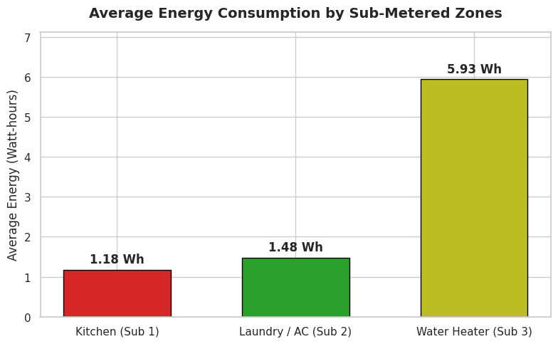
Timeline of Data Gaps & Interruptions
Identification of the major 2-day telemetry outage repaired via linear interpolation
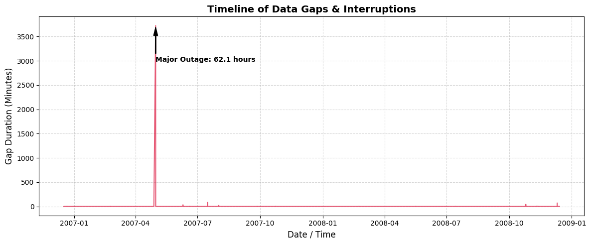
Distribution of Time Intervals (Log Scale)
Proves 99.6% of intervals are exactly 1-minute apart
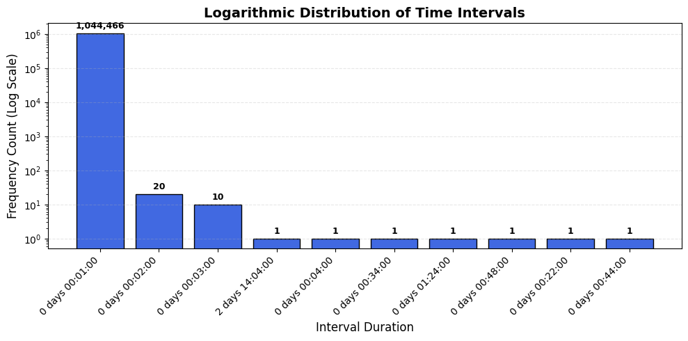
Multi-Scale Voltage Behavioral Analysis
Visual inspection across full timeline, individual day, single week, and monthly smoothing
Single Day (24-Hour Cycle)
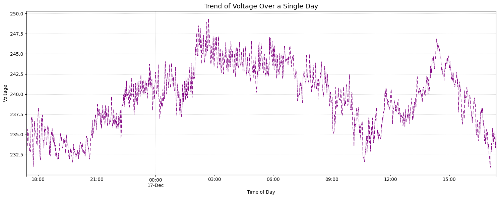
Single Week (7-Day Fluctuations)
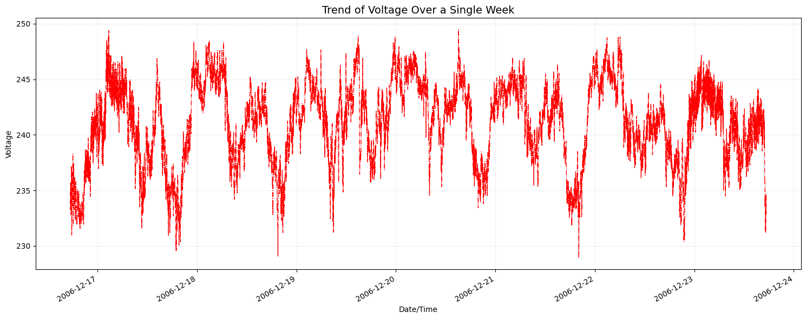
Raw Month vs Daily Average
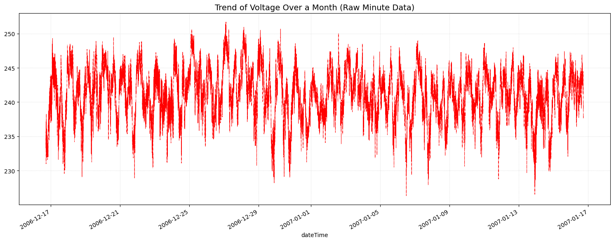
Daily Averaged Month Trend
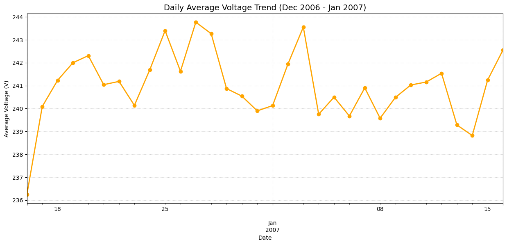
Project Overview & Problem Statement
Goal: Forecast future household energy demand levels into 3 operational regimes (Low, Medium, High) 1-minute ahead to empower dynamic smart grid load shedding, peak shaving, and consumer energy budgeting.
Input Feature Specification (13 Features):
Global_active_power: Household global minute-averaged active power (kW)Global_reactive_power: Household global minute-averaged reactive power (kW)Voltage: Minute-averaged line voltage (V)Global_intensity: Minute-averaged current intensity (Amps)Sub_metering_1: Kitchen energy consumption (Wh)Sub_metering_2: Laundry room & AC consumption (Wh)Sub_metering_3: Electric water heater & climate control (Wh)power_lag_1: Active power 1 minute ago (kW)power_lag_5: Active power 5 minutes ago (kW)power_lag_15: Active power 15 minutes ago (kW)power_mean_15: Historical 15-minute moving average (kW)hour: Hour of the day (0–23)day_of_week: Day of the week (0–6, Monday–Sunday)
End-to-End Pipeline Architecture
household_power_consumption.csv, convert timestamps to index, handle missing values, and repair short gaps via linear interpolation.
SimpleImputer, StandardScaler, and 5 classifiers evaluated on 70/15/15 chronological split.
How to Run the Frontend Applications
Three deployment options are provided in the repository: